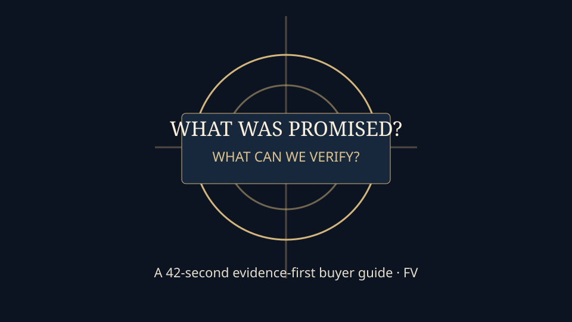

The small decision hidden in a big claim
In 2005, researchers secretly switched a photograph after someone chose between two faces. Many participants explained the unexpected picture without detecting the swap. The lesson is not that an audio can rewrite a brain. It is that a confident explanation can conceal a missing piece of evidence. Read the original experiment.
So when a meditation seller promises the benefit of a longer session in twelve minutes, ask a less glamorous question: what, exactly, would you receive, and what evidence supports the comparison? You don't need to suspend judgment or abandon the idea of an enjoyable routine. You need a fair baseline, accurate package terms and a claim-to-proof distinction.
What the seller describes—not what we have independently verified
The official Zen12 About page describes downloadable twelve-minute audio sessions organized into twelve levels. It identifies four styles per level: relaxation music, guided meditation, white noise and nature sounds. The general catalog lists beginner, premium and advanced packages with differing level counts. A separate promotional page describes the complete course and uses its own discount presentation. These are different seller offers; no claim is made that either is an approved Final Vestige affiliate destination.
- Likely buyer
- Someone who prefers audio structure and can budget a short, repeatable listening session.
- Format
- Seller-described MP3 downloads and accompanying guide materials; confirm exact deliverables in the checkout currently presented.
- Selection
- Some packages cover six levels; the premium/complete presentation describes twelve. Do not infer every package includes all recordings.
- Style
- Guided, music, nature and white-noise variants are described on the About page. Availability should be checked for the exact package.
- Price and refund
- Unverified for the particular authorized future merchant link. Promotional prices, coupon clocks, guarantees and eligibility conditions must be documented at that final checkout before activation.
Optional original 42-second film concept
Static, original storyboard/poster; film not yet encoded, narrated or playable. No autoplay, third-party player, JavaScript, cookies, or surprise audio.

Read the full 42-second script and captions
0–7s: “A face is chosen. A different face is handed back.”
7–14s: “In choice-blindness experiments, some people explained the result they never selected.”
14–21s: “That does not prove audio can reprogram the mind.”
21–28s: “Zen12's seller describes twelve-minute sessions, levels and listening styles.”
28–35s: “Check exact packages, scientific evidence and refund terms.”
35–42s: “Start with a free twelve-minute baseline. Buy only on verified terms.”
Storyboard captions: six-cue WebVTT source. A final encoded film, properly rendered captions, transcript and independent keyboard/motion/video QA are required before any deployment.
Before you buy, run a free twelve-minute baseline
- Choose a quiet place where you can safely sit. Do not do this while driving or operating machinery.
- Set a twelve-minute timer, breathe naturally, and listen to the ordinary surroundings without a purchased recording.
- Before and after, record a simple self-chosen measure such as whether you completed the session and how easy it was to stay with it. These notes are subjective, not medical evidence.
- Repeat on a few different days. If you later use an audio, keep the same recording conditions and note expectations and other differences.
This comparison cannot establish clinical efficacy or rule out placebo effects. It does give you an honest zero-cost reference before making a purchasing decision. For a structured, free companion, use the existing Seven Day Focus Fieldbook; it uses the single established Jetpack signup, not a new list.
The scientific gap
The Zen12 seller attributes benefits to brainwave audio and makes “hour in twelve minutes” and other benefit statements. We do not represent those statements as fact. A 2023 systematic review of fourteen binaural-beat EEG studies found heterogeneous, inconsistent results: five supported the entrainment hypothesis, eight conflicted and one was mixed. That review did not evaluate Zen12. Nor does evidence for meditation generally show that this recording reproduces an hour of meditation, treats anxiety or improves wealth.
Independent source: Ingendoh and colleagues, PLOS ONE (2023), DOI 10.1371/journal.pone.0286023. FTC guidance calls for objective health claims to be supported with appropriate product-relevant scientific evidence.
Six questions worth asking at checkout
- Exact edition: Does the destination sell the beginner, advanced or complete twelve-level course, and precisely how many MP3s?
- Delivery: Are downloads available on your device, and are any guides or support calls actually included?
- Evidence: Are benefits claimed for this product specifically, or inferred from unrelated studies of meditation or auditory stimulation?
- Refund: Who handles returns, what is the current window, what conditions apply, and is the policy visible before payment?
- Alternatives: Would an ordinary free timer, guided session from a reputable free source, or the existing free Fieldbook meet your need?
- Expectations: Would you still want these recordings if they provided only convenient listening structure and no guaranteed psychological or medical result?
Reasons to pass—and reasons it might still fit
Pass for now if you need an evidence-based treatment for an illness, guaranteed productivity or financial change, a device-specific claim of brainwave control, or clarity about refund conditions that has not been provided. A recording is not a substitute for professional healthcare.
Consider only after checking terms if you value a set of optional audio styles, prefer short sessions and understand that convenience is an offered format, not proof of accelerated meditation. No one at Final Vestige is claiming a firsthand trial or outcome.
Commercial pathway · not active
Zen12 offer: authorization and exact checkout still unverified
Prospective affiliate disclosure: If a future authorized purchasing link is added, Final Vestige may earn a commission if you buy through it, at no additional cost to you. There is no earning link on this draft and no active affiliate relationship is being asserted here.
No price, coupon, timer, commission rate, reported customer result, product efficacy or refund promise is adopted here. We will not activate an outbound offer without written partner/channel approval, the issued SKU-specific link, checkout terms, independent QA and founder release authorization.
Continue the investigation without buying anything
Explore Change Blindness and the Franklin/Mesmer investigation, or study the historical source chain in Puységur's Animal Magnetism Files. Read our editorial standards and general affiliate disclosure. The independent investigation remains available whether or not you ever purchase audio.